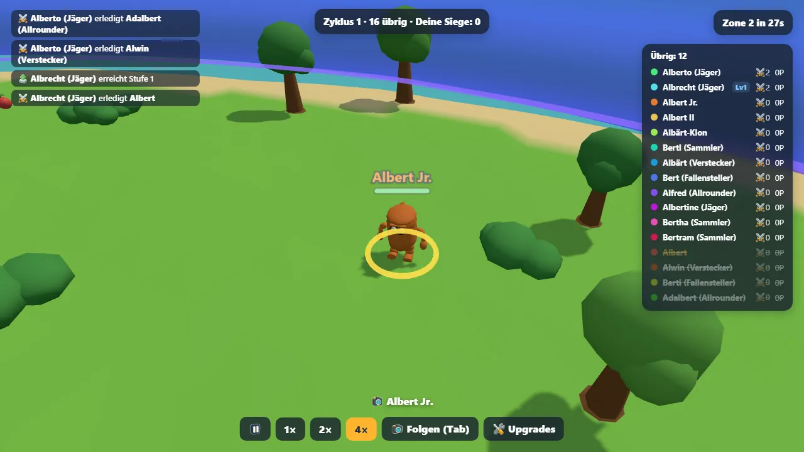
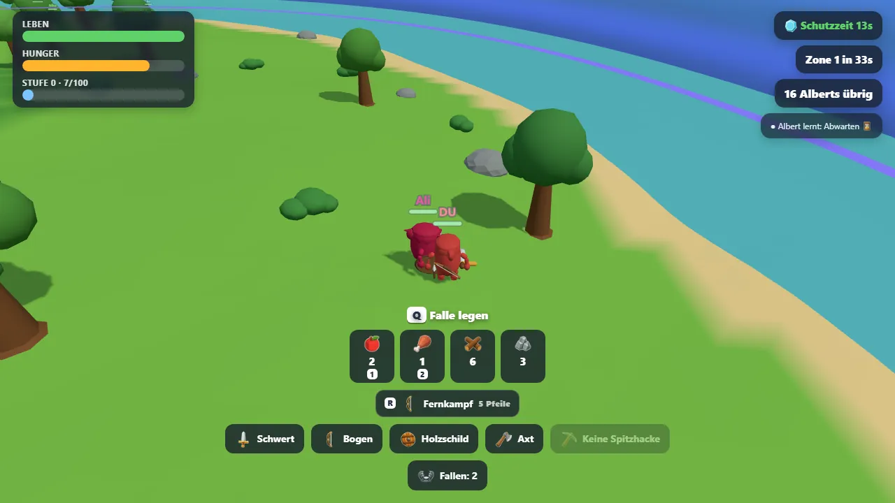
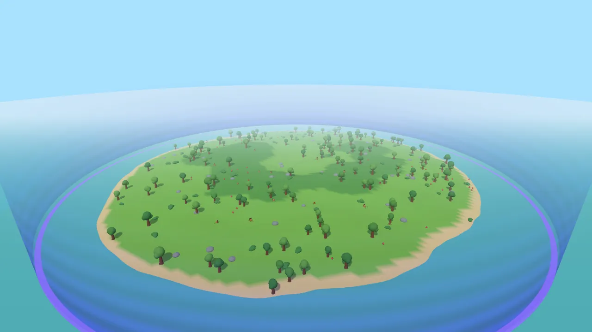
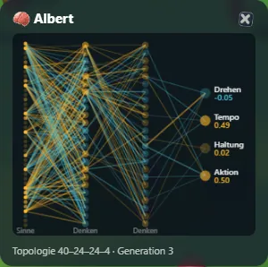
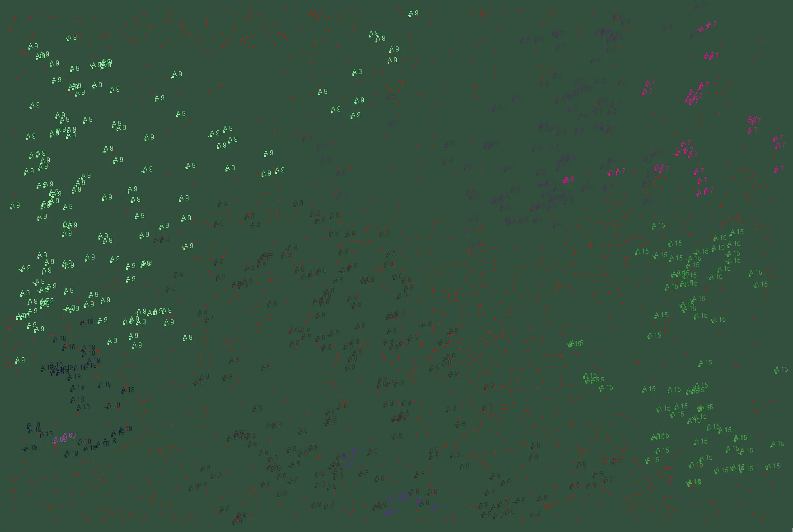

KI-Spiel
Albert Royale. Dein Albert lernt von dir.
Ein 3D-Battle-Royale, in dem du deinem eigenen Charakter erst das Überleben beibringst, und ihn dann allein in die Arena schickst. Das Gehirn dahinter ist ein selbstgeschriebenes neuronales Netz, das aus deinem Spielverhalten trainiert wird.

Über das Projekt
Zwei Spiele, ein Gehirn
Angefangen hat Albert als Java-Evolutionssimulation: Kreaturen leben auf einer Karte, sehen per Raycast, verhungern ohne Nahrung, greifen fremde Gruppen an und vererben ihr neuronales Netz an mutierte Klone. Wer überlebt, gibt seine Gewichte weiter, intelligentes Verhalten entsteht rein durch Selektion.
Albert Royale dreht dieses Prinzip um. Statt auf zufällige Mutation zu warten, wird dein Spielverhalten zum Trainingsmaterial: In Phase 1 spielst du selbst, und alle drei Ticks wird ein Paar aus Beobachtung und deiner Aktion aufgezeichnet. Ein Web Worker trainiert das Netz danach per Behavior Cloning darauf. Spielst du aggressiv, wird dein Albert ein Jäger; hortest du Nahrung und versteckst dich, wird er ein Überlebenskünstler. In Phase 2 schaust du nur noch zu, wie er sich gegen fünfzehn andere schlägt.
Features
Was drinsteckt
Behavior Cloning
Beobachtung + Aktion werden alle drei Ticks aufgezeichnet und in einem Web Worker per Backpropagation ins Netz trainiert, ohne den Render-Thread zu blockieren.
Acht Sichtstrahlen
Der Raycast aus der Java-Simulation wurde auf acht Strahlen erweitert: Jeder Albert sieht Gegner, Futter und Hindernisse als Sensorvektor, mehr bekommt das Netz nicht.
Schrumpfende Zone
Klassischer Battle-Royale-Druck: Die Zone zieht sich in Stufen zusammen, Kämpfe werden erzwungen, und die Netze müssen mit Zeitdruck umgehen lernen.
Waffen, Rüstung, Fallen
Aus „Kollision mit fremder Gruppe → Schaden“ wurde ein echtes Kampfsystem mit Schwert, Bogen, Schild, Axt und Fallen, inklusive Crafting und Loot.
Brain-Inspektor
Ein Overlay zeigt die Live-Aktivierungen aller Schichten samt Topologie und Generation, man sieht dem Netz beim Entscheiden zu, statt nur das Ergebnis zu sehen.
Fixer Zeitschritt
20 Ticks Simulation pro Sekunde, 60 FPS Rendering mit Interpolation dazwischen, deterministisches Verhalten bei flüssiger Darstellung.
Einblicke
Aus dem Spiel




Tech Stack
Technologien
Interesse an KI im Browser?
Albert Royale ist ein Eigenprojekt, der Code, die Balance-Dokumente und das Game-Design-Dokument liegen offen im Repository. Wenn Sie etwas Ähnliches vorhaben, sprechen wir darüber.